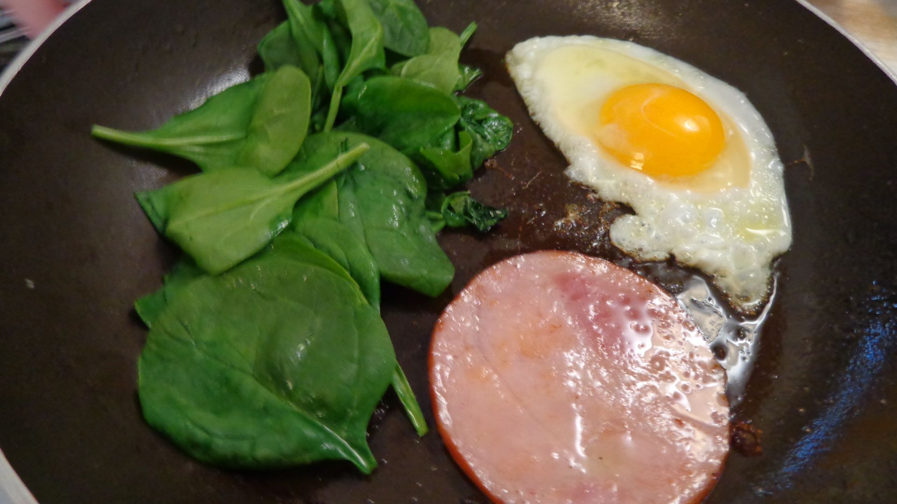

Eggs

Eggs with a side of spinach and Canadian bacon.
Here is a very simple yet high in protein breakfast recipe.
Ingredients
- 1 tbsp butter or olive oil divided
- 3 large egggs
- 1/2 cup (1/2 oz.) baby spinach with salt and groung black pepper to taste
Steps
- Heat up a large skillet over medium-high heat with half of the butter.
- When hot, crack the eggs straight into the pan, season with salt and pepper,
and fry until the whites are set. Place a lid on the pan, or flip the eggs
over and cook for an additional minute.
- Remove the eggs from the pan and add the bacon and spinach. Season with salt
and pepper to taste.
- Fry until the bacon darkens and the spinach has wilted.
- Put everything on a plate and top the spinach with ther rest of the butter
before serving.